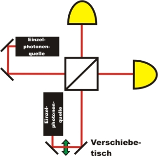

Hong-Ou-Mandel Interferenz Kapitel 2:
Durchführung des Experimentes
Im letzten Kapitel wurden die Möglichkeiten an einem Strahlteiler und die Ununterscheidbarkeit diskutiert. In diesem Kapitel wird das Quantenphänomen experimentell überprüft. Durch den Freistrahlaufbau gelingt es uns nicht die Ununterscheidbarkeit bei der Überlagerung auf dem Strahlteilerwürfel vollständig (V=100%) herzustellen. Der Effekt ist aber trotzdem deutlich sichtbar (V=66%).
Veränderung der Ankunftszeit auf den Strahlteiler
Die Ankunftszeit der Photonen am dem Strahlteiler kann durch eine zusätzliche Wegstrecke im Strahlengang eines Photons verändert werden. Dazu wird ein Verschiebetisch verwendet, dessen Wegstrecke in Schritten bis zu 0,000.1mm verändert werden kann. Da sich Photonen mit Lichtgeschwindigkeit fortbewegen lässt sich mit dem Aufbau eine Zeitdifferenz in Schritten von 0,7fs (Femto-Sekunden) einstellen. Mit dieser Genauigkeit ist das Argument der Gleichzeitigkeit erfüllt.

Abb. 4: Skizze des Experimentes: Veränderung der Weglänge durch
einen verstellbaren Verschiebetisch in einem der beiden Wegstrecken.
Quantenphänomen selbst entdecken:
Was ist nun das eigentliche Quantenphänomen am Strahlteiler? Im folgenden interaktiven Experiment kann dies selbst erforscht werden. Hierzu wird die Ankunftszeit der Photonen mit Hilfe des Verschiebetisches variiert. Der Verschiebetisch ist elektrisch angesteuert. Beim Start des Experimentes fährt der Tisch 0,09mm vor die 0-Position und variiert von dort in Schritten von 1µm. Dieser minimale Wegunterschied pro Schritt kann auf den Photos im interaktiven Experiment nicht erkannt werden.
Als Messung werden die Koinzidenzen zwischen den beiden Detektoren angezeigt. Wenn eine Koinzidenz erfolgt, fanden die Möglichkeiten a) oder b) (aus dem letzten Kapitel) statt. Tritt keine Koinzidenz auf, so fanden die Möglichkeiten c) oder d) statt. Im interaktiven Experiment kann ein Diagramm eingeblendet werden, bei dem die Koinzidenzen über der Zeitdifferenz der beiden Photonen aufgetragen werden. Welches Verhalten ist bei Photonen beobachtbar, wenn Sie nahezu ununterscheidbar sind?
Beobachtung:
Wenn die Photonen exakt zum gleichen Zeitpunkt auf den Strahlteiler auftreffen, geht die Koinzidenzrate deutlich zurück. Die beiden Photonen werden am Strahlteiler entweder beide transmittiert oder beide reflektiert (Möglichkeit c und d im letzten Kapitel). Im Idealfall geht die Koinzidenzrate auf 0 Ereignisse pro Sekunde zurück. Ob die beiden Photonen am Strahlteiler transmittiert oder beide Photonen reflektiert werden ist nicht vorhersagbar. Hier kommt neben der Hong-Ou-Mandel Interferenz zusätzlich der Quantenzufall [Kwo09] ins Spiel.
In unserem Experiment ist die Sichtbarkeit des Einbruchs nicht 100%. Erklärbar ist die geringe Sichtbarkeit mit einem nicht perfekten symmetrischen Strahlteilers (60% zu 40%) und einer nicht perfekten Überlagerung der beiden Strahlen auf dem Strahlteiler. In der Forschung wird der absolute Überlapp durch einen faserintegrierten Aufbau erreicht [Kwo09], was für ein Ausbildungsexperiment nicht geeignet ist. Ein deutlicher Einbruch in den Koinzidenzen (dip) ist in unserem Experiment trotzdem sichtbar (V=66%) und stimmt mit der Theorie überein. Wir möchten an weiteren Verbesserungen der Sichtbarkeit des dips arbeiten und freuen uns hier über Ratschläge und Hinweise.
Zeigen alle Quantenobjekte das gleiche Verhalten?
Photonen werden bei absoluter Ununterscheidbarkeit am Strahlteiler entweder beide transmittiert oder beide reflektiert. Ganz anders sieht das Verhalten bei Elektronen aus. Sobald zwei Elektronen ununterscheidbar auf einen Strahlteilerwürfel auftreffen, wird immer ein Elektron transmittiert und das andere Elektron reflektiert. Die Elektronen werden niemals beide transmittiert oder reflektiert. Im Experiment mit Elektronen würde im Gegensatz zu Photonen bei Ununterscheidbarkeit die Koinzidenzrate sehr stark ansteigen. Elektronen gehören zu der Gruppe der Fermionen, Photonen gehören zur der Gruppe der Bosonen. Das Verhalten im Hong-Ou-Mandel Interferometer hängt somit von der Art der Quantenobjekte - Bosonen oder Fermionen - ab.
Im Experiment werden die beiden Photonen aus einer einzigen Photonenpaarquelle erzeugt. Die Photonen können aber auch aus unterschiedlichen Quellen stammen [Mos08] und zeigen trotzdem das gleiche Verhalten bei Ununterscheidbarkeit.
Der Hong-Ou-Mandel dip ist nicht nur ein Grundlagenexperiment, sondern wird in Verbindung mit verschränkten_Photonen in der Quantenteleportation angewandt [Urs04].
Originaldaten aus dem Experiment: Hong-Ou-Mandel dip
Zurück zur Übersicht [klick]
Autor: P. Bronner, Juli 2008